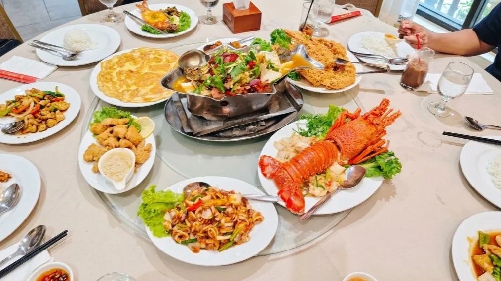

Table request
Let’s Plan
Your Table.
Call or WhatsApp our team with your date, preferred time and number of guests to check availability.
A message is a table request. Your reservation is confirmed only when the restaurant confirms it.

Table request
Call or WhatsApp our team with your date, preferred time and number of guests to check availability.
A message is a table request. Your reservation is confirmed only when the restaurant confirms it.
Planning your meal
Have your date, arrival time and group size ready. Let the team know about any dietary requirements or questions about the menu.
Open daily, 1:00 pm–11:00 pm, at Lot 418, Jalan Pantai Tengah, Langkawi.
Get directions or browse our seafood highlights.